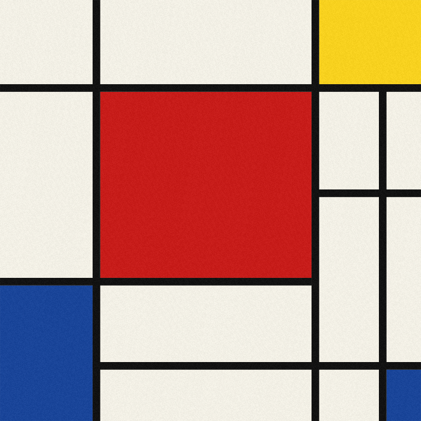
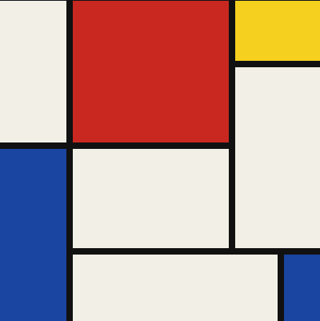
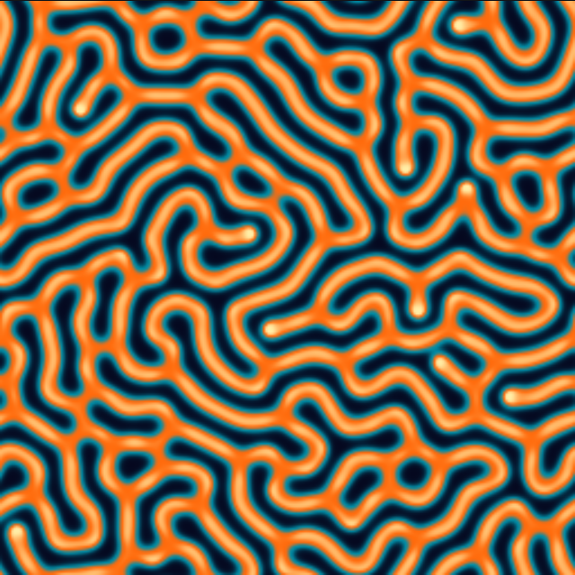
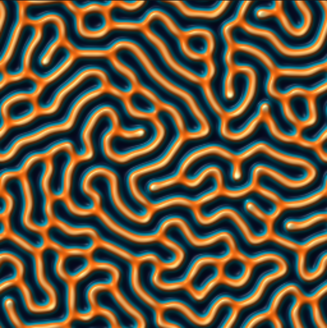
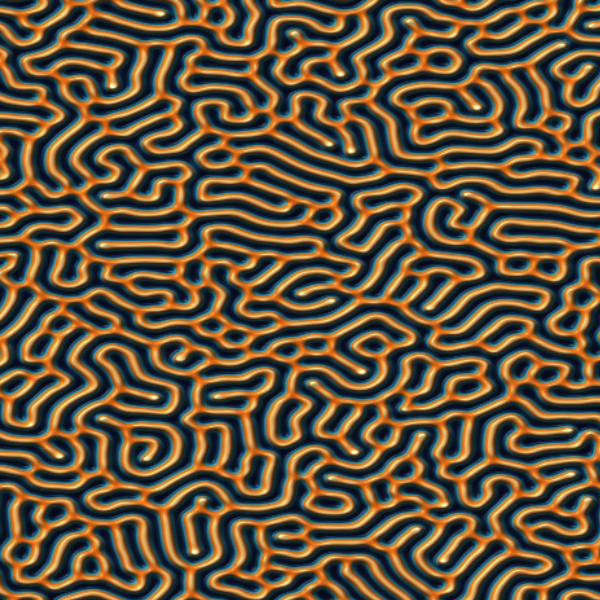
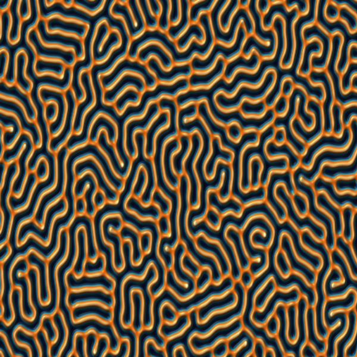
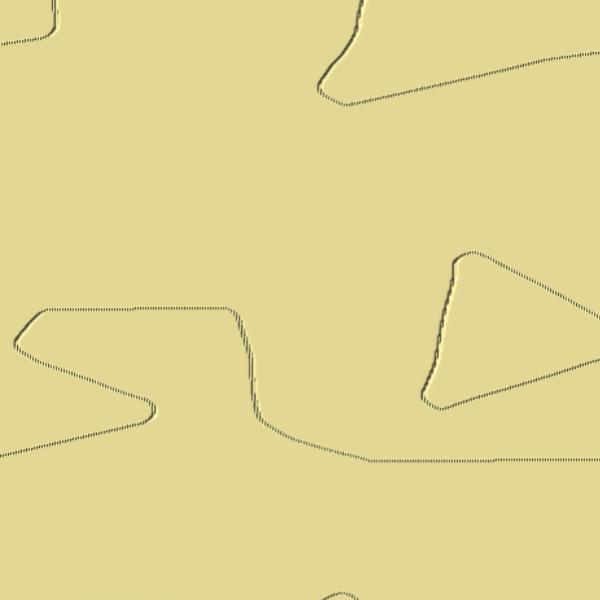
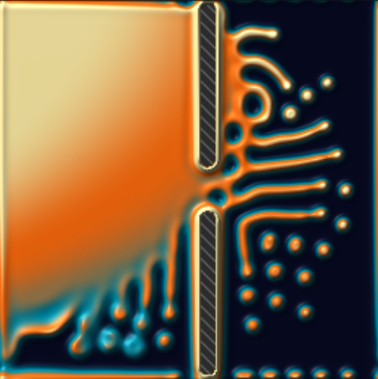
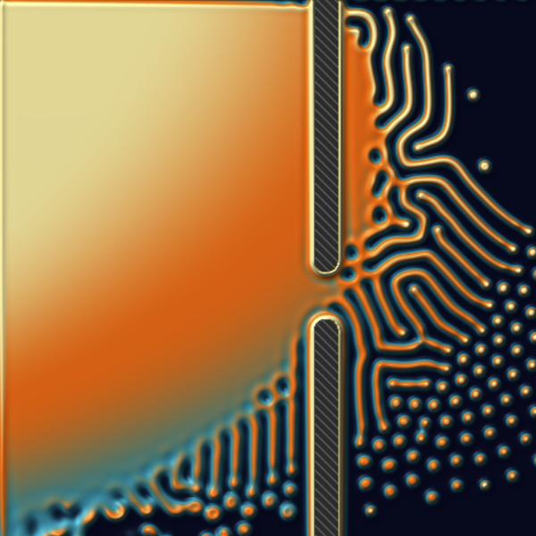
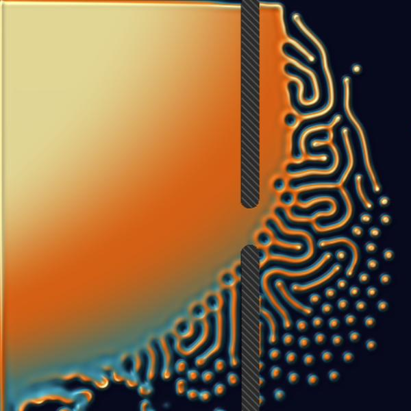

Why JavaScript: I work as a JavaScript developer, so I decided to experiment and do this assignment in plain JS in the browser instead of a dedicated engine. I wanted to find out what JavaScript is actually capable of here, and how realistic and how easy it is to use it for parallel computing (Web Workers on the CPU, shaders on the GPU) and for shader graphics.
Scope: I chose tasks A and C and added a small
CPU-vs-GPU benchmark as the bonus. Everything lives in one self-contained file,
index.html (plain JavaScript + WebGL2, no libraries). Task B (Godot port) is not part of this report.
Implementation Strategy:
The painting is stored as plain data: a list of rectangles [x, y, w, h, colour] in the
range 0..1 with the origin at the top-left. JavaScript uploads this list to the shader as the uniform arrays
uRect[N] and uCol[N], and the fragment shader loops over it for every pixel. The
requested function is rect(st, pos, size, aa): it returns 1.0 inside a rectangle and 0.0 outside,
so moving or placing a rectangle means changing only pos and size.
The colour blocks are drawn first and the black lines on top, which gives the characteristic thick grid.
Shader code (the full source is in index.html):
// 1.0 inside the rectangle, 0.0 outside, soft edge of width ~uAA
float rect(vec2 st, vec2 pos, vec2 size, float aa){
vec2 lo = smoothstep(pos - aa, pos + aa, st);
vec2 hi = 1.0 - smoothstep(pos + size - aa, pos + size + aa, st);
vec2 m = lo * hi;
return m.x * m.y;
}
void main(){
vec2 st = gl_FragCoord.xy / uRes;
st.y = 1.0 - st.y; // flip: GL origin is bottom-left
vec3 c = uPaper;
for (int i = 0; i < N; i++)
c = mix(c, uCol[i], rect(st, uRect[i].xy, uRect[i].zw, uAA));
c += (hash(gl_FragCoord.xy) - 0.5) * uGrain; // paper grain
outColor = vec4(c, 1.0);
}// the composition itself is just data (T = line thickness)
const SHAPES=[
[V1+T, H1+T, V2-V1-T, H2-H1-T, 'red'],
[V2+T, 0, 1-V2-T, H1, 'yellow'],
[0, H2+T, V1, 1-H2-T, 'blue'],
[V3+T, H3+T, 1-V3-T, 1-H3-T, 'blue'],
[V1, 0, T, 1, 'black'], // ... plus 6 more black lines
...
];Three renderers of the same painting:
rect() logic evaluated per pixel over ImageData. It is there to make the point that a shader is just "a function from pixel position to colour" that the GPU happens to run in parallel; the demo prints the measured CPU time under the canvas.display: grid with a black background and gap producing the lines. No JavaScript, a joke version (its composition is its own, since a uniform gap means every line runs edge to edge). I tried it just for fun: I had seen cases where people build whole pages and even games in pure CSS, without JavaScript, and wanted to see how close CSS alone gets to the painting. It has no practical value for this assignment, I simply decided to keep it.
Figure: GLSL fragment shader (WebGL2).
Figure: the same logic in JavaScript, per pixel on the CPU.

Figure: pure CSS grid, zero JavaScript.
step(). I replaced step() with smoothstep() to get anti-aliased edges and a tunable softness. Multiplying the lower-left and upper-right masks acts as a logical AND.mix(): mix(c, colour, mask) paints a shape over whatever is already there, so the draw order is simply the order of the loop.gl_FragCoord starts at the bottom-left, while I wanted to write the composition top-down as on paper, hence st.y = 1.0 - st.y (the CPU twin does the same with its row index).#define N is injected from JavaScript), plus how to find uniform locations for array names.gl_VertexID so that no vertex buffer is needed.fract(sin(dot(p, ...)) * 43758.5453) hash, used to give the paper a slight texture.Why this simulation:
I chose the Gray-Scott reaction-diffusion model because it is the cleanest example of "computation lives in a texture". Every cell only needs its eight neighbours, so every pixel can be updated independently and in parallel, which is exactly what a fragment shader does. It also has a very rich parameter space: two numbers, the feed rate $f$ and the kill rate $k$, switch the system between spots, stripes, labyrinths and splitting cells. That makes an "enhancement" visible in a single picture instead of requiring a table of numbers.
The model:
Two chemicals $A$ and $B$ diffuse over a grid and react as $A + 2B \to 3B$; $A$ is fed in at rate $f$ and $B$ is removed at rate $f + k$:
$$\frac{\partial A}{\partial t} = D_A \nabla^2 A - AB^2 + f\,(1 - A), \qquad \frac{\partial B}{\partial t} = D_B \nabla^2 B + AB^2 - (k + f)\,B$$
The Laplacian is the usual 3x3 stencil (centre -1, edges 0.2, corners 0.05), with $D_A = 1$, $D_B = 0.5$ and one explicit Euler step per pass.
Implementation Strategy (GPGPU through WebGL2):
RGBA32F texture; R holds $A$, G holds $B$, B is a wall mask. 32-bit floats are needed because the per-step changes are tiny and half precision would stall the pattern.texelFetch and writes the next state into texture 1 through a framebuffer; then the roles swap. A feedback loop (reading and writing the same texture) is not allowed, which is why two textures are needed.Enhancements and their effect:

Figure: preset "coral" ($f = 0.0545$, $k = 0.062$), thermal palette.

Figure: exactly the same state in the relief view.

Figure: anisotropy $a = +0.6$, stripes tend to run horizontally.

Figure: anisotropy $a = -0.6$, stripes tend to run vertically.

Figure: $a = 0.8$, the pattern collapses ($B$ floods the grid).

Figure: parameter map ($k$ grows to the right, $f$ grows upward) with two absorbing walls and a gap between them.
What the figures show:

Figure: absorbing walls, 15 000 steps.

Figure: reflecting walls, same setup, 15 000 steps.
Core of the simulation shader (the full source is in index.html):
// neighbour value; walls either absorb (A=1,B=0) or reflect (copy of centre = zero flux)
vec2 nb(ivec2 q, vec2 centre){
vec4 v = texelFetch(uState, (q + uSize) % uSize, 0);
if (v.b > 0.5) return (uReflect == 1) ? centre : vec2(1.0, 0.0);
return v.rg;
}
void main(){
ivec2 p = ivec2(gl_FragCoord.xy);
vec4 c = texelFetch(uState, p, 0);
float wall = c.b;
vec2 ab = c.rg, nx = vec2(1.0, 0.0);
if (wall < 0.5) {
float wh = 0.2 * (1.0 + uAniso), wv = 0.2 * (1.0 - uAniso);
vec2 lap = -ab
+ wh * (nb(p + ivec2(-1, 0), ab) + nb(p + ivec2(1, 0), ab))
+ wv * (nb(p + ivec2(0, -1), ab) + nb(p + ivec2(0, 1), ab))
+ 0.05 * (nb(p + ivec2(-1,-1), ab) + nb(p + ivec2(1,-1), ab)
+ nb(p + ivec2(-1, 1), ab) + nb(p + ivec2(1, 1), ab));
float f = uF, k = uK;
if (uMap == 1) { // parameter map
vec2 uv = (vec2(p) + 0.5) / vec2(uSize);
k = mix(uKRange.x, uKRange.y, uv.x);
f = mix(uFRange.x, uFRange.y, uv.y);
}
float A = ab.x, B = ab.y, r = A * B * B;
nx = ab + uDt * vec2(uDa * lap.x - r + f * (1.0 - A),
uDb * lap.y + r - (k + f) * B);
nx = clamp(nx, 0.0, 1.0);
}
// ... brush (seed B / draw wall / erase wall) ...
o = vec4(nx, wall, 1.0);
}A note on WebCL:
The task text mentions WebCL. As far as I could find, WebCL is no longer maintained and is not implemented in current browsers, so I used the way the linked page by Amanda Ghassaei works: general-purpose computation through WebGL fragment shaders and render-to-texture. WebGPU compute shaders would be the modern alternative.
Objective:
To see what "one thread per pixel" actually buys, I ran the identical Gray-Scott step (same stencil, $f = 0.0545$, $k = 0.062$, $D_A = 1$, $D_B = 0.5$, same start state) in two ways: on the CPU with a pool of Web Workers, and on the GPU with the pixel shader from Exercise C.
CPU parallelisation strategy:
SharedArrayBuffer requires cross-origin isolation, which a page opened from file:// does not have, so data is copied with postMessage (transferable buffers). That copy is part of the measured CPU time.readPixels at the end forces the queued work to finish; without it the timer would only measure command submission.Correctness check:
The strip decomposition was compared with a naive reference that wraps around in both directions (verify_strips.js, 64x64 grid, 30 steps).
For 1, 3, 4 and 7 strips the maximum absolute difference was exactly 0, so the halo scheme reproduces the sequential result bit for bit.
Empirical Measurements:
Machine: 14 logical cores (navigator.hardwareConcurrency), integrated Intel GPU
(WebGL renderer: ANGLE, Direct3D 11), Chromium-based browser. Grid 512 x 512, 100 steps.
The CPU numbers jumped quite a lot between runs (one worker took anywhere from 734 to 1351 ms), so the table shows the
median of 5 runs. The GPU time was stable (94-98 ms).
| Method | Time (ms) | Steps / s | M cell-updates / s | Speedup vs 1 worker |
|---|---|---|---|---|
| Web Workers x1 | 781 | 128 | 34 | 1.0x |
| Web Workers x2 | 420 | 238 | 62 | 1.9x |
| Web Workers x4 | 293 | 341 | 89 | 2.7x |
| Web Workers x8 | 221 | 452 | 119 | 3.5x |
| Web Workers x14 (all logical cores) | 279 | 358 | 94 | 2.8x |
| GPU (WebGL2 shader) | 96 | 1042 | 273 | 8.1x |
To see how the gap depends on the problem size I also ran 256 and 1024 once each (100 steps):
| Grid | Best CPU row | GPU | GPU vs best CPU | GPU M cell-updates / s |
|---|---|---|---|---|
| 256 x 256 | 88 ms (x4) | 32 ms | 2.8x | 207 |
| 512 x 512 | 221 ms (x8) | 96 ms | 2.3x | 273 |
| 1024 x 1024 | 995 ms (x8) | 315 ms | 3.2x | 333 |
SharedArrayBuffer on file://), and the strips are stitched together on one thread. This serial part does not shrink when workers are added (Amdahl's law).Hurdles I ran into:
RGBA32F textures but cannot draw into them without EXT_color_buffer_float. With 8-bit or half precision the tiny per-step changes of Gray-Scott get rounded away and the pattern stalls, so the demo checks for the extension and shows an error instead of silently producing garbage.gl_FragCoord starts at the bottom-left, while the Mondrian composition and the mouse events use the top-left. Forgetting the flip mirrors the painting and makes the brush draw in the wrong place.readPixels at the end forces the GPU to finish before the timer stops.file://) cannot load a separate worker script, so the worker code is built from the same function as a string and started through a Blob URL. The same page also has no cross-origin isolation, so SharedArrayBuffer is unavailable and data has to be copied between threads. To pay for the copy less often, each worker gets 10 extra halo rows and runs 10 steps per round instead of 1.verify_strips.js, which compares the strip version with a simple sequential one in Node.Alternatives I considered:
GPUComputationRenderer for ping-pong simulations, and gpu.js turns a JS function into a shader automatically. I decided against them on purpose: the goal was to see how much raw JavaScript and WebGL can do and what the GPU plumbing actually looks like, not to hide it behind a library.SharedArrayBuffer. Serving the page with COOP/COEP headers would let workers share memory and avoid the copies. I chose a single index.html that opens with a double click and needs no setup, and accepted the copy cost (it is measured and visible in the benchmark).step() instead of smoothstep() for the rectangles. step(), as in the book, gives jagged edges. smoothstep() gives anti-aliased edges and a softness slider for almost no extra cost.Conclusion on JavaScript:
For shader graphics JavaScript turned out to be a very practical choice: the shader itself is the same GLSL as anywhere else, and JS only needs a few dozen lines of setup.
For parallel computing it is realistic too, but with caveats: on the GPU you have to think in textures and draw calls (WebGL) or move to WebGPU, and on the CPU Web Workers work well only if you keep communication rare, because without SharedArrayBuffer every exchange is a copy.